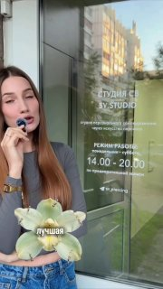
Сделать классный пирсинг или добавить в жизнь немного красоты и эмоций можно в SV.STUDIO Тут…
НовостьПо данным источника
Индексация также затронет перевозку багажа и грузобагажа. Купе и СВ повышение не касается — цены на билеты в этих вагонах перевозчики устанавливают отдельно. С начала 2023 года тарифы на плацкарт повышают уже в пятый раз.…

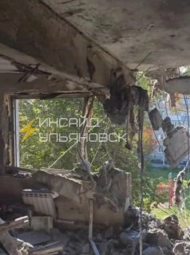
Ранним утром 25 сентября мирная жизнь ульяновской семьи Григорьевых из дома № 54 по улице Розы Люксембург разделилась на «до» и «после».…

Более 50 живописных и графических работ Аркадия и Николая Пластовых, а также Елены Холодилиной.…

Этой осенью в Ульяновске высадят более четырёх тысяч зелёных насаждений.…
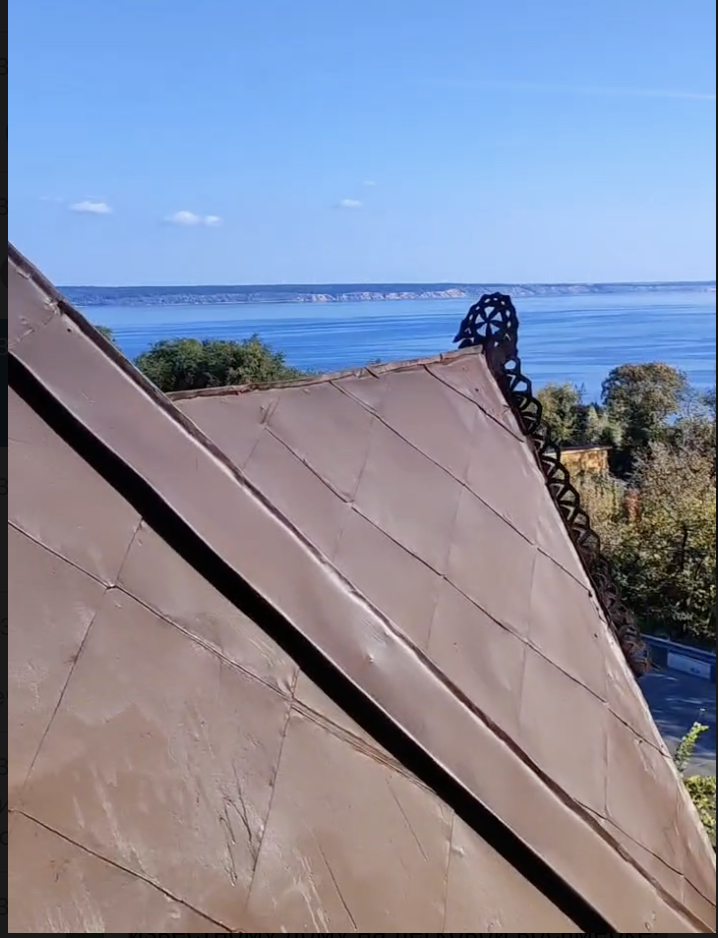
В Ульяновске завершился ремонт кровли знаменитого «Теремка над Волгой» — объекта культурного наследия «Дом архитектора С.Н.…

Его мама находится на лечении и не может быть рядом, поэтому попросила детского омбудсмена Ольгу Иванову обнять сына.…
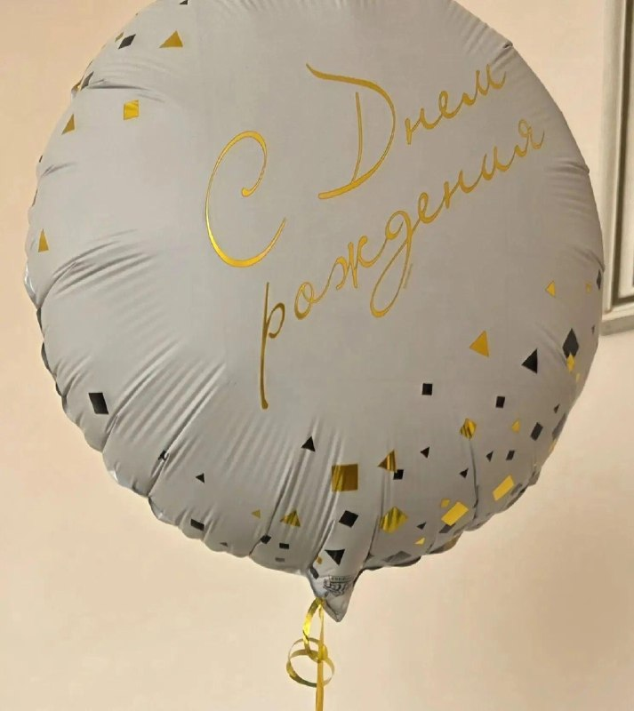
Его мама Гузяль сама лежит в госпитале с травмой головы и не смогла приехать к сыну, поэтому попросила детского омбудсмена Ольгу Иванову навестить парня.…
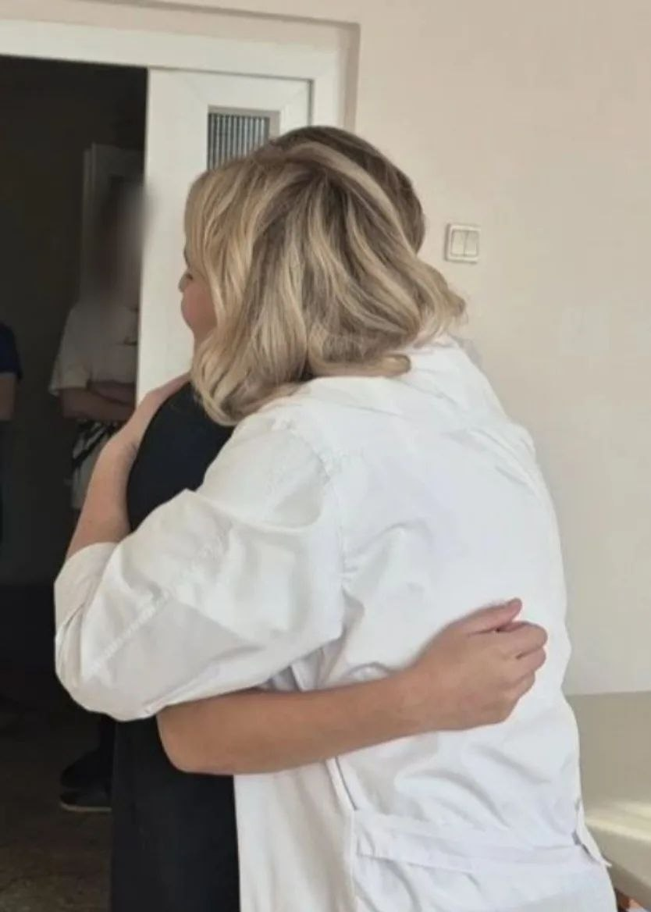
28 сентября 16-летие отметил подросток из семьи, чья квартира в доме № 54 по улице Розы Люксембург была полностью уничтожена во время атаки беспилотника.…
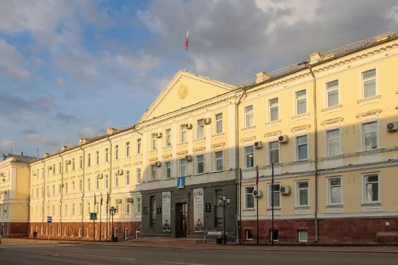
Для принятия самых оперативных решений в этот же день подписал постановление о введении режима чрезвычайной ситуации локального характера.…

По словам производителей, авто станет лучшим предложением в соотношении цена/качество в своем сегменте.

Пункт приема: г. Ульяновск, ул. Урицкого, д.41, корп.1. Телефон: +7 (8422) 58-85-54.…

Сейчас идет голосование за подключение малых сел и деревень Ульяновской области к мобильному интернету на 2027 год.…

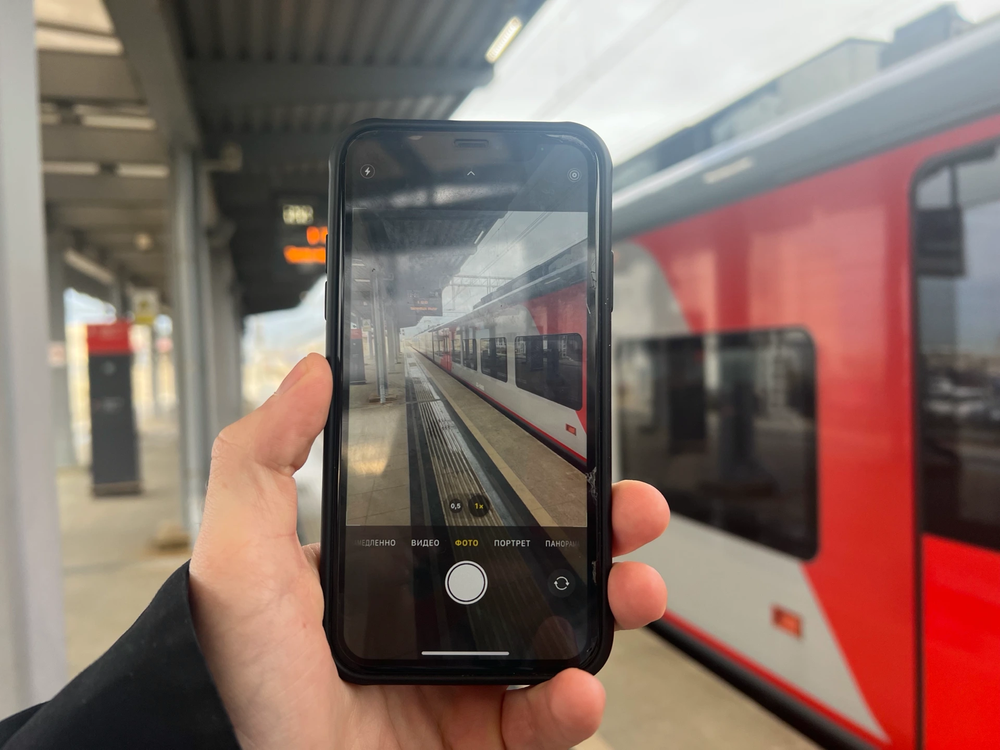
На Киевском и Ленинградском железнодорожных вокзалах Москвы, а также на Московском вокзале Санкт-Петербурга развернули 5G-покрытие.…

Видео хулиганских действий есть! Если есть ещё пострадавшие от его действий — пишите в личку. Составим коллективное заявление!…

При этом ночные температуры могут опускаться до -2°C уже в середине октября.…
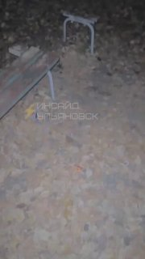
Камеры сверят номера машин с базами ФССП и ГИБДД и смогут выявлять неплательщиков алиментов, штрафов и долгов по ЖКХ.…

Пострадавшая, 68-летняя женщина, госпитализирована.

23-летний пассажир Kia погиб на месте до приезда скорой; водитель и второй 21-летний пассажир госпитализированы.

На место оперативно прибыли экстренные службы: территория была разминирована, коммунальщики восстановили системы жизнеобеспечения.…

Сегодня, 28 сентября, свой день рождения отмечают: Наталья Аюкаева — замминистра природных ресурсов и экологии (юбилей — 60 лет) Екатерина Нейфельд — главный редактор литературного агентства «Инкред» 73online поздравляет именинников!…
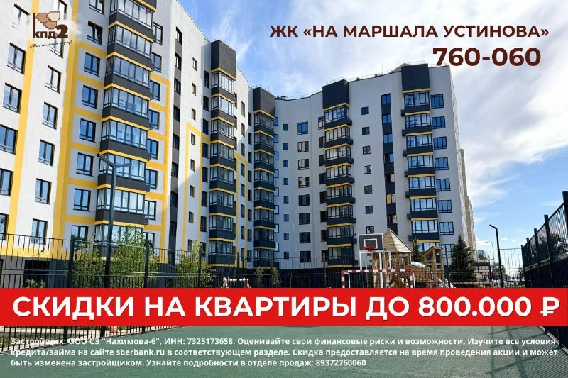
🏡 В жилом комплексе «На Маршала Устинова» стартовала масштабная осенняя распродажа .…

Первыми тепло получат больницы с постоянным пребыванием пациентов, затем его подадут в детские сады, школы и другие учреждения — всего более 600 зданий.…

Главный вопрос — помощь жителям домов на улицах Розы Люксембург и Юности.…

К спору привлечены городское управление дорожного хозяйства и транспорта, областной Минтранс и АНО «Центр организации дорожного движения».

Водитель предъявил автоинспекторам оформленное на его имя водительское удостоверение государства ближнего зарубежья.…
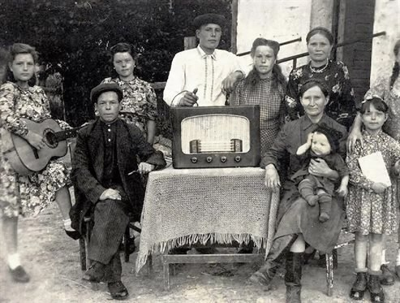
Первым в регион прибыл эшелон из Брянской области.…

Болдакин подписал после атаки БПЛА 25 сентября Самое важное — помочь людям с Розы Люксембург и Юности. Окна замеряют, часть стеклопакетов уже делают.…

Поминальный обед - в столовой «Вкусняшка» (ул. Мориса Тореза, 2а) в 15:00.

В ночь на субботу, 26 сентября , на одной из улиц Нового города автомобиль «Киа Рио» на высокой скорости влетел в припаркованный грузовик «МАЗ».…
Принимают перевязочные материалы, антисептики, продукты длительного хранения, детское питание, средства гигиены, а также постельное белье, подушки и пледы (строго новые).…

Пункт приема вещей организован по адресу: г. Ульяновск, ул. Урицкого, д. 41, корп. 1 (телефон для справок: +7 (8422) 58-85-54).…

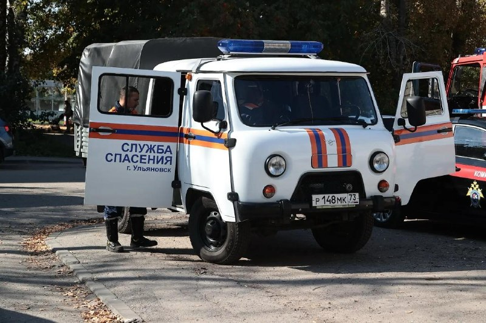
Главным вопросом остаётся помощь жителям многоквартирных домов на улицах Розы Люксембург и Юности.…
Ничего по этому фильтру в ленте нет — показать все материалы.
Возник 15.09, пик 15.09 — сюжет держали 34 источника. Полная дуга — в недельнике.